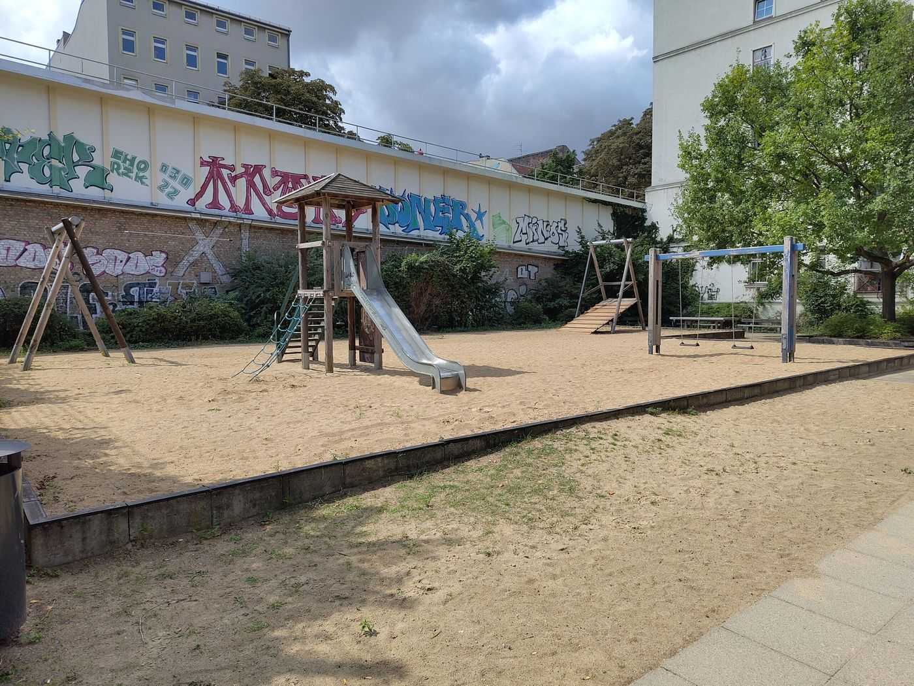
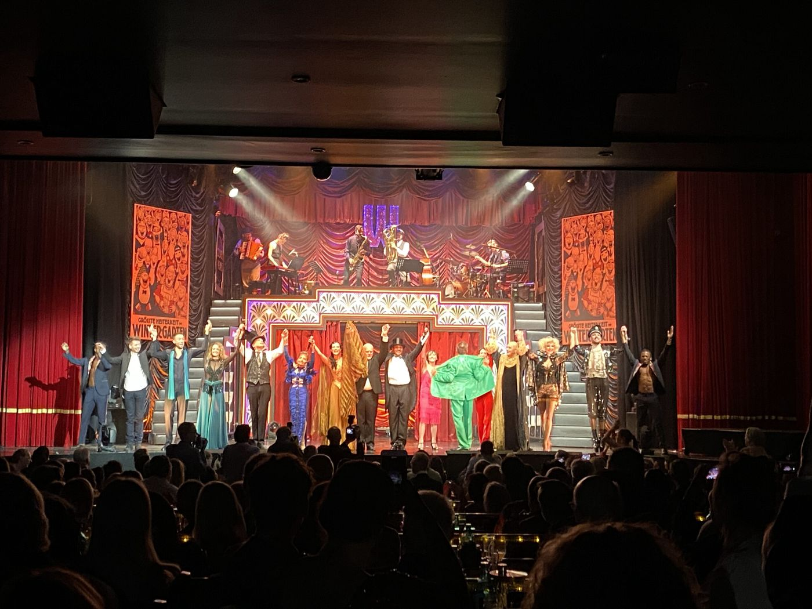

Zweite Fassung
Von der Pohlstraße ins Varieté
Erst der Spielplatz, den man übersieht. Dann Les Climats. Dann der Wintergarten in der Potsdamer Straße 96.
Essen. Les Climats, Pohlstraße 75. Öffnungszeiten
Stopps
- Spielplatz, obere Pohlstraße

Kiez mit Kind: Der “geheime“ Spielplatz in der Pohlstraße - Les Climats Öffnungszeiten
- Wintergarten Varieté

Der Wintergarten feiert seinen 30. Geburtstag
Gelesen
Auf der oberen Pohlstraße, zwischen Flottwellstraße und Potsdamer Straße, liegt ein Spielplatz, an dem die Serie „Kiez mit Kind“ im August 2024 schon oft vorbeigekommen war: nach dem Einkauf, nach dem Gleisdreieck, nach dem Eis. Eine große Sandfläche, ein Rutschturm über Treppe oder Netz, zwei Schaukeln, eine Seilbahn. Für die Kleinsten ein Tunnel hinter einer Art Zaun. Drei Tischtennisplatten und ein Käfig mit Basketballkörben, wenn im Gleisdreieck die Platten besetzt sind. Bänke im Schatten zur Straße. Zu essen gibt es dort nichts.
Ein Stück die Pohlstraße weiter liegt Les Climats. Dazu gibt es einen Beitrag, vom 16. Mai 2023, und der beschreibt eine Woche. Am 17. Mai Jazz Manouche, Beginn 19 Uhr, Eintritt frei: Thomas Dekas an der Gitarre, Matthieu Baud am Bass, Max Eisinger an der Violine. An fünf Abenden kocht Chloé, unter anderem Pâté en croute, die Coronation-Quiche, Spargel, Ceviche, Brandenburger Reh und Crème Caramel: der 18., 19., 24., 25. und 27. Mai, jeweils ab 19 Uhr, Reservierung erbeten. In den Beiträgen ist das die einzige Woche, die zu diesem Haus beschrieben wird.
Am Ende des Wegs ist der Wintergarten, Potsdamer Straße 96. Am 25. September 2022 wird der Saal dreißig. Volles Haus, zwei Stunden aus den Shows. Georg Strecker zeigt Jonglage, Zauberei, Chanson, Berliner Klamauk und ernste Töne und erkennt Artisten und Musiker an. Franziska Giffey begrüßt die Gäste. Peter Schwenkow, einer der Gründer, erzählt aus den Anfängen. Aus dem Club Quartier Latin wurde ein Varieté mit Sternenhimmel, Leitspruch „Dem Staunen gewidmet“. Neben dem rot-goldenen Saal liegt ein Hof, an dem Abend eine Gourmetmeile. Die von Fiona Bennett gestalteten Toiletten nennt Giffey die schönsten Berlins. Am 19. Juni desselben Jahres ist das Hoffest frei, von 11 bis 16 Uhr, mit Artistik und einem Brunch.
Die Reihe „Spaziergang in die Vergangenheit“ bleibt 2025 an derselben Tür stehen. Am 19. September schreibt Paul Enck: das Varieté ist hier seit 1992, die Adresse hieß vor 1933 Potsdamer Straße 39. Eröffnet am 29. September 1992, von André Heller, Bernhard Paul vom Circus Roncalli und Peter Schwenkow, in leerstehenden Räumen, knapp 500 Plätze. Später verkauften sie das Haus an eine Investorengruppe, die 2008 Insolvenz anmeldete. Mitte 2009 fand sich ein neuer Betreiber. Dessen Gesellschafter waren schon Vermieter und erwarben im Frühjahr 2009 Inventar und Namensrechte, damit das Theater spielfertig und die Marke erhalten blieb. Seit 2010 eigene Shows, das ganze Jahr. Café und Hof sind zum dreißigsten Jahr umgebaut. Im zweiten Teil, am 10. Oktober, steht, was vor 1992 in dem Haus war: von 1970 bis 1989 das Quartier Latin. Christa und Manfred Saß aus Hamburg übernahmen es 1970 von der Epicur GmbH, die einem ehemaligen Kino den Namen gegeben hatte. Der Eingang war wenig glanzvoll, der Glanz war drinnen. Gezählt werden fast 6000 Abende; im Buch von Marco Saß und Henry Steinhau etwa 4000, an anderer Stelle 2300. Genannt werden unter anderen Ton Steine Scherben, Udo Lindenberg, Herbert Grönemeyer, die Puhdys, Die Ärzte und Nina Hagen. Der Name Wintergarten ist älter als dieses Haus. Von 1881 bis zur Zerstörung 1944 stand das Varieté am Central-Hotel, Friedrichstraße Ecke Dorotheenstraße, und dort liefen die ersten Filmvorführungen Berlins. Nach dem Krieg ein Kino-Varieté in der Neuen Welt an der Hasenheide: eröffnet im Dezember 1945, Spielbetrieb ab September 1946, geschlossen 1955. An der Potsdamer Straße 96 erst seit dem 29. September 1992.
Aus den Beiträgen
- Kiez mit Kind: Der geheime Spielplatz in der Pohlstraße
- Jazz live und Gute Küche im „Les Climats“
- Der Wintergarten feiert seinen 30. Geburtstag
- Eindrücke vom Hoffest des Wintergarten Varieté
- Spaziergang in die Vergangenheit (34): Potsdamer Str. 96 (Teil 1)
- Spaziergang in die Vergangenheit (34): Potsdamer Str. 96 (Teil 2)